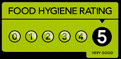

Get in touch today for made-to-order cakes, pies and other great homemade goodies!
I have always been passionate about making my own preserves, chutneys and cakes, and have enjoyed some success entering them at the Collingham Show.
During the festive period, I will be offering decorated Christmas cakes in a range of sizes, as well as mince pies and jars of luxury brandy mincemeat.
Christmas cakes can also be made to your specification with marzipan and icing, or dressed with a selection of dried fruit and nuts and finished with an apricot glaze.
I also provide a selection of chutneys, jams and marmalade all year round. I am offering free delivery to Collingham village. If you have any enquiries feel free to get in touch via the phone number or email address below. My kitchen has received a 5-star Food Hygiene Rating from the Food Standards Agency.
